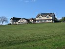
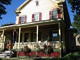

|
|
|
lornaland.co.uk Holidays Photo Gallery Lornaland Natter USA 2005 Journal Menu...New YorkBoston Cooperstown Buffalo Las Vegas Death Valley Yosemite National Park San Francisco San Simeon Los Angeles San Diego Cooperstown Pictures |
Cooperstown9th September 2005Friday 9th September 2005 Time to start out journey westwards. We left Boston and headed towards Cooperstown, but only after we'd purchased ourselves a road map of America. We stopped only once on the way to visit Howe Caverns. It was a strange attraction and the $18pp ticket price seemed a little steep but we paid our money and prepared to make the most of it. The tour in the caverns was very interested. It lasted well over an hour included a boat ride along the underground river and a walk through the "winding way". Our guide Ashton had rehearsed her role well and provided a few comedy phrases which though vaguely funny at the time, were taken literally by some of those on our tour and repeated constantly. Annoying, but funny! After the tour, it was time to head over to Cooperstown. We arrived at the Lyoncher B&B at 6.00pm and were greeted by our host, Tom.  After a quick change, we headed into town to check out the sights. We didn't have much time in Cooperstown which was a shame. We walked to Ostego Lake and around the main streets and the looked for somewhere to eat. Tom had recommended a few places for dinner so we wandered round and checked them out. We eventually decided on the Hoffman Lane Bistro. A very good choice. The Bistro was very cool and the menu sounded yummy. I decided that if I ever owned a restaurant, it would be quite similar. The highlight of the night (apart from the delicious food) was the table. They had the usual setup, linen tablecloth covered with a paper cloth on top but they also provided crayons. At first we were very English about the whole thing and were afraid to do anything. It started with a small Union Jack flag by me and a picturesque scene from Dan but as the wine flowed, the doodles got bigger and by the time the waitress had taken the main plates away, there wasn't much space left. The food was very delicious and we blew a days budget on a 3 course meal. For starters we had lamb kebabs and mussels in garlic and white wine, followed by honey and herb chicken and a steak salad. We finished it all off with creme brulee and a chocolate mousse on Oreo cookie base. After dinner we had a few beers in the Doubleday Cafe and watched some baseball on TV. We got talking to another customer who kindly explained the rules which helped. |